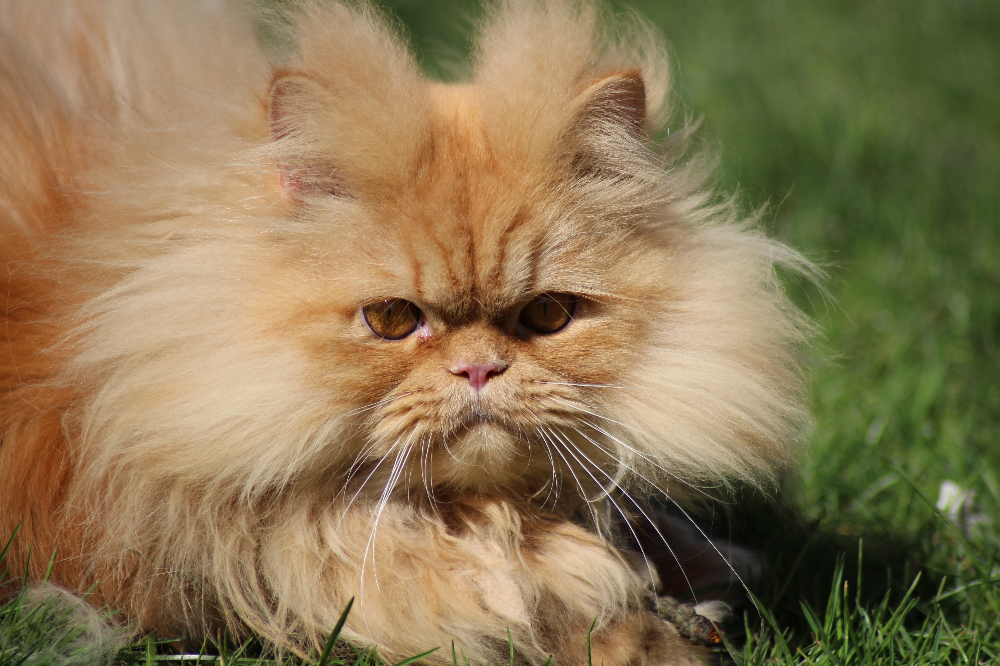

Detalhes do Gato Persa

Descrição:
-Porte: pequeno a médio
-Tipo de pelo: longo, de duas texturas principais: sedosa, mais brilhante e resistente (associada a cores dominantes) e de algodão suave (associada a cores como azul e creme). Uma pelagem pesada envolve a cabeça, e no corpo o casaco flui atingindo o chão; a cauda é emplumada e densa
-Expectativa de vida: 14 a 17 anos
-Peso: 3 a 5,5 kg
Gato de pequeno a médio porte, com corpo bem desenvolvido e musculoso. Sua cauda é curta e grossa. O focinho é curto, o que lhe confere uma aparência de cara achatada Possui pelo macio, de comprimento longo e abundante. Esta raça pode ser encontrada em mais de cem diferentes combinações de cores, variando desde o branco-neve até o malhado, que tem aparência de casco de tartaruga.
Origem e historia :
A história do gato persa se inicia no século XVII, quando um viajante italiano chamado Pietro Della Valle em passagem pela Pérsia (hoje conhecemos como Irão), trouxe consigo alguns belos gatos que andavam pelas ruas de lá.
Chegando na Itália, imediatamente os gatos ganharam a simpatia das pessoas devido a sua pelagem macia e brilhante.
Mas a raça persa surgiu somente no século XIX, quando esses gatos criados na Itália foram levados para a Inglaterra, onde sofreram cruzamentos com gatos da raça angorá.
A partir daí alguns pesquisadores iniciaram um trabalho de melhoramento genético com a intenção de obter uma variedade maior de cores e padrões de pelagem.
Hoje existem mais de 100 diferentes combinações de cores para gatos persas, variando desde o branco neve até o malhado.
Saúde e temperamento:
Os Gatos Persas, em geral, são gatos muito educados e quietos. Mas também gostam de brincar e passar tempo ao lado de seus tutores. Diferente dos gatos mais “esportistas”, eles preferem relaxar e descansar no sofá a escalar brinquedos. Os persas também se dão bem com crianças. Porém, é importante lembrá-las que eles não são animais de estimação como os cães e que em muitos momentos eles não vão estar muitos dispostos a brincar, e as crianças devem aceitar isso.
Esses peludos não se importam em passar algum tempo sozinho. Mas lembre-se de que nenhum pet deve ser deixado em casa sozinho por longos períodos com frequência. Manter esse hábito certamente poderá vir a causar outros problemas, como Ansiedade de Separação, por exemplo. Ou seja, se você pretende fazer uma viagem ou passar um tempo fora de casa, procure um Pet Sitter para garantir que seu pequeno fique bem enquanto você estiver ausente.
A estrutura do gato Persa o torna propenso a uma série de problemas de saúde, além de outras doenças associadas à sua natureza genética. As mais comuns são:
-Dificuldade para respirar, que pode provocar barulhos como fungadas e roncos;
-Má oclusão dentária, com os dentes mal encaixados na arcada dentária;
-Sensibilidade ao calor, o que torna essa raça difícil de ser criada em cidades de altas temperaturas;
-Problemas oftálmicos, como excesso de lágrimas, entrópio e olho de cereja;
-Problemas de pele, como micose, infecções por fungos, coceira, vermelhidão, perda de pelo e seborreia oleosa;
-Doença renal policística.
Curiosidades
Alguns gatos do cinema mundial tem como inspiração a raça de gatos, persa.
seriam eles o Garfield(O gato mais famoso da tela dos cinemas, porém seu comportamento não tem nada de inspirador no comportamento do gato persa original).
Outro astro muito conhecido nas telas é o Snowbell, o gatinho que era louco para devorar o pequeno Stuart little, este felino também não faz jus ao comportamento padrão do gato persa.
O gato bichento da franquia Harry Potter.Este felino lindo e também muito conhecido é o famoso gato de Hermione Granger da série Harry Potter, se você olhar para os gatos persas de fora da tela, você verá que semelhanças são meras coincidência.
Preço médio no mercado
Um filhote de persa pode custar de R$ 800 até R$ 1.6 mil, o valor varia pelo gênero e cor, o focinho também influência muito em seu preço. Fora isso, ainda há os gastos com vacinas, ração e a areia higiênica que é colocada em suas caixinhas.
Fontes usadas :
Pet Anjo
Canal do Pet
Quanto Custa ?
Meus Animais
Mundo dos animais